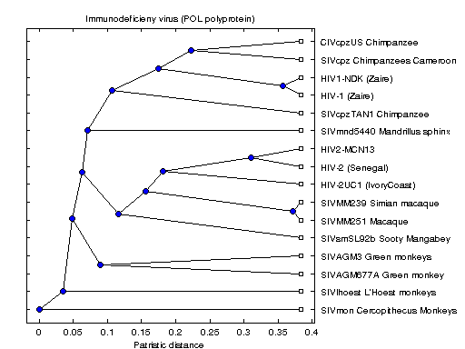

Sequential Analysis of the Origin of the Human Immunodeficiency Virus
This demo shows pairwise sequence alignment (PWSA). PWSA has multiple applications in bioinformatics, such as multiple sequence analysis and phylogenetic tree reconstruction. We look at a PWSA that uses a global dynamic programming algorithm to align each pair of sequences, and we then calculate the pairwise distances using the Tajima-Nei metric. This gives us a matrix of distances between sequences that we use for inferring the phylogeny of HIV and SIV viruses. PWSA is a computationally expensive task with complexity O(L*L*N*N), where L is the average length of the sequences and N is the number of sequences [Durbin, et al. Cambridge University Press, 1998].
For details about the computations, view the code for pctdemo_setup_hiv.
Prerequisites:
Related demos:
Contents
Load the Demo Settings and the Data
We start by getting the demo difficulty level. If you want to use a different demo difficulty level, use paralleldemoconfig and then run this demo again. See Customizing the Settings for the Demos in the Parallel Computing Toolbox for full details.
difficulty = pctdemo_helper_getDefaults();
The pctdemo_setup_hiv function retrieves the protein sequence information from the NCBI GenBank® database, and the difficulty parameter controls how many protein sequences we retrieve. You can view the code for pctdemo_setup_hiv for full details.
[fig, pol, description] = pctdemo_setup_hiv(difficulty); numViruses = length(pol); startTime = clock;
Downloading data from the NCBI GenBank database Finished downloading
Calculate the Distances
We call seqpdist to align the POL sequences and use the Tajima-Nei metric to measure the distances between them.
pold = seqpdist(pol, 'method', 'Tajima-Nei', 'Alphabet', 'NT', ... 'indel', 'pair');
Measure the Elapsed Time
The time used for the sequential computations should be compared against the time it takes to perform the same set of calculations using the Parallel Computing Toolbox in the Distributed Analysis of the Origin of the Human Immunodeficiency Virus demo. The elapsed time varies with the underlying hardware.
elapsedTime = etime(clock, startTime);
fprintf('Elapsed time is %2.1f seconds\n', elapsedTime);
Elapsed time is 28.0 seconds
Plot the Results
Now that we have all the distances, we can construct the phylogenetic tree for the POL proteins. You can view the code for pctdemo_plot_hiv for full details.
pctdemo_plot_hiv(fig, pold, description);